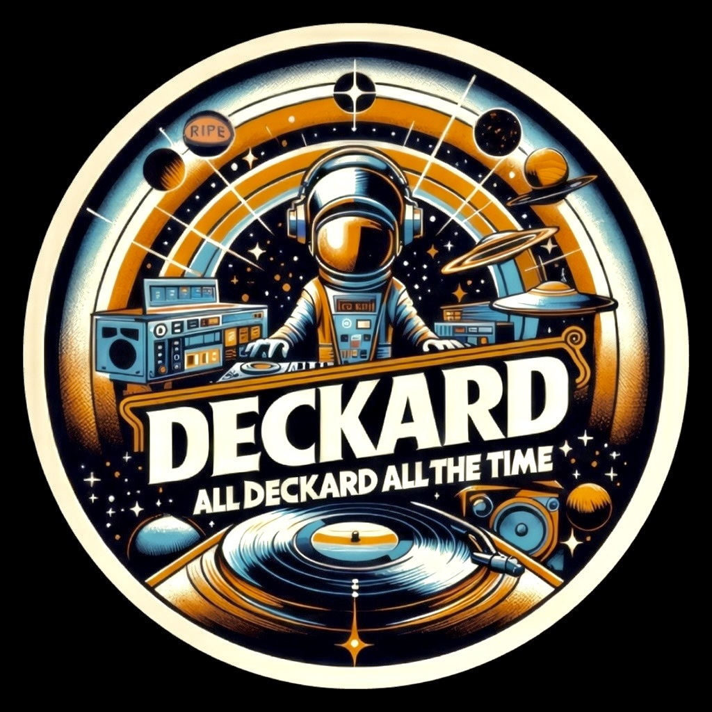

The artist
Bio / EPK
Music that lifts your soul. Breakbeat, funk, house, downtempo/chill. Built for Day, Night or Afters.
Music that lifts your soul. Breakbeat, funk, house, downtempo/chill. Built for Day, Night or Afters.

Deckard has spent twenty-five years learning what a room wants before it knows itself. A San Francisco selector by trade and by temperament — breakbeat, funk and house, built for the back half of the night.
The résumé reads like a map of where the city dances: Space Cowboys, Breakfast of Champions, the playa, and a long list of floors that don't make flyers. He plays the part nobody else wants — the slow climb, the 2am turn, the moment the energy decides what kind of night it's going to be.
But there's another side to the crate. When the floor thins and the night starts to exhale, Deckard reaches for something more sophisticated — the sleek, sexy, after-club end of tech house, the deep grooves he's poured into the My Definition of Chill series for years. Soundtracks for the after: the late-night wind-down, the drive home after a good one, the comedown that still wants a groove. He plays those live, too, for rooms built to listen.
No genre purity, no laptop theatre. Just a deep crate and a good read of the room. Inspired by actual events.
Peninsula Beach Club, Brazil — resident DJ, 2014 & 2015.
"All Deckard All The Time." — Cindy Phung
Festivals, clubs, private and corporate floors. Travels with or without a rig. Full tech rider and the corporate one-sheet are in the press kit; production and booking run through Lumen Soundworks.
Press & booking: team@djdeckard.com